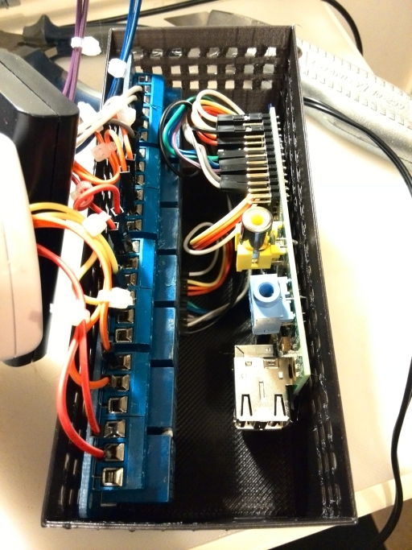

Hi - I'm extrmemly happy with all my IR control through my ITach IP2IR and would like to extend that to a couple more devices. I have radio control mains switches on 433.92MHz and a projector screen motor on 315MHz. Is there something similar to the iTach thats allows me to learn the output signals and reproduce them over OpenRemote2?
An alternate solution is to use the 'senders' that came with the 2 devices and connect them to my RPi openremote2 controller. I dont know the technicalities but is that possible in principe? I'm thinking that the RPi has a bank of GPIO's which are programmable - I wonder if I could connect these to the board from the blipper? I'm guessing its not as simple as that but figure it only needs to create a circuit on the sender via a couple of pins on the RPi. I've had a closer look at one of the senders and by closing the circuit on the PCB (with a screwdriver blade) it reliably activates the relevant RC mains switch. So the question is now can I connect these to my RPi. When I put a tester across the circuit it measures .35 on 20m - this seems very low and reckon an RPi could switch this. Possibly I'm on the wrong forum now :-/
So I guess the next question is there a way I can send a signal from OpenRemote2 to the RPi GPIO?
Any thoughts appreciated 
cheers
PS - if you are interested I've posted the question on StackExchange
{kind=link}
|
You can control RPi GPIO through "Shell Command" protocol. For radio control there is a german device "http://www.ezcontrol.de/content/view/36/28/" |
I've done a bit with GPIO here: http://www.openremote.org/display/docs/OpenRemote+2.0+How+To+-+Control+Sunshades+-+Somfy+with+Raspberry+Pi |
|
Okay - placed a couple of orders - an 8 channel relay control board and a sunfounder universal kit - that should get me going! Once I'm up to speed I'll post some results cheers |
|
Hi - further to last entry I have now wired up the RPi-GPIO with a 8-way relay and 2 remotes. I've posted a video on YouTube and happy to share the setup if anyone is interested. Here is a link http://www.youtube.com/watch?v=d8LpMo57n6s |
|
Nice video |
|
I've now printed an enclosure for the RPI/Relay Board - very handy having a 3D printer! Heres a pic...  The RPI is on the right neatly connected to a printed HDMI shaped protrusion in the base of the box. The 8-way relay is on the left. As you can see there is still some tidying up to do. Ideally I'll print a lid with cutouts for sockets which will connect to the relays. The sockets will then, in theory, allow me to plug-in the remotes controls and unplug them again as and when required. |